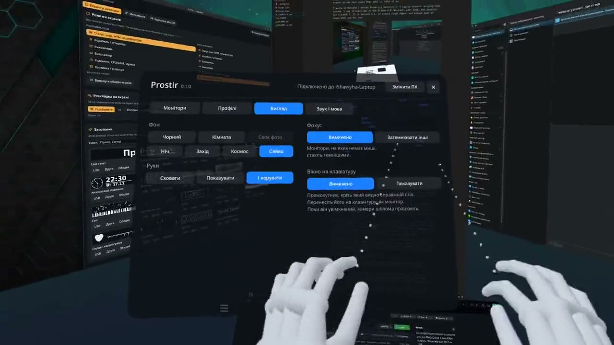
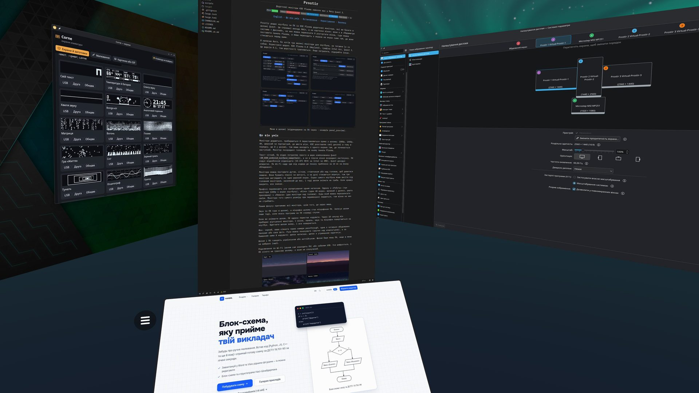
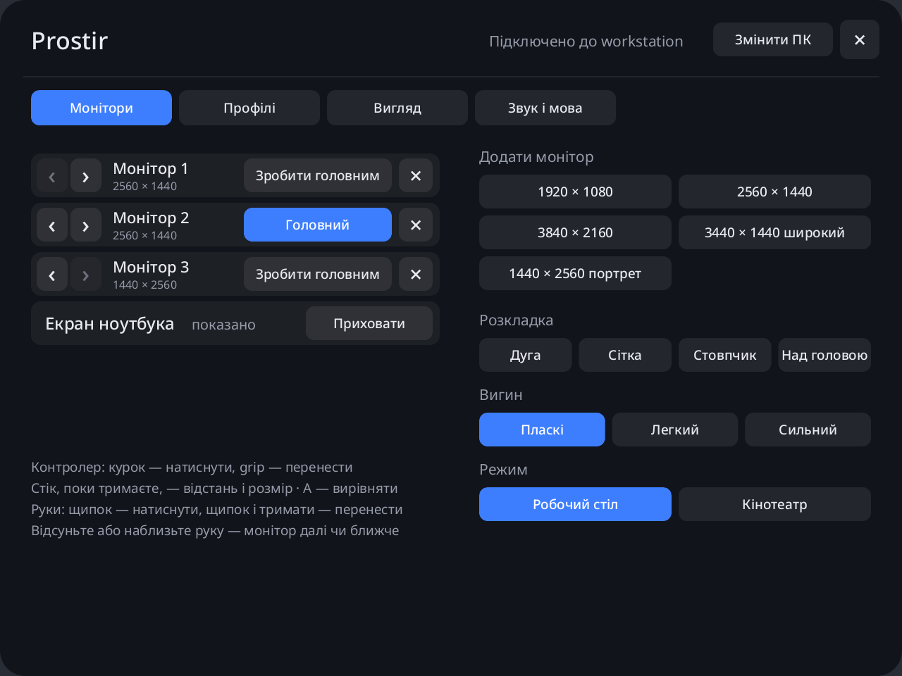

Додаткові монітори для KDE Plasma у шоломі Quest 3
Prostir перетворює шолом на багатомоніторне робоче місце для ноутбука чи ПК. Монітори справжні, це виходи KWin: на них переносяться вікна, туди можна поставити панель Plasma, а миша переходить з одного на інший там, де вони стикаються перед вами.


Що він уміє
Монітори додаються, прибираються й переставляються прямо з шолома: 1080p, 1440p, 4K, широкий чи портретний, до шести. KDE розставляє свої дисплеї так, як ви їх бачите, поруч і один над одним, тож миша виходить з одного монітора там, де починається наступний.
Текст чіткий, бо відео потрапляє просто в шари компоновника Quest, а не в пласке вікно застосунку. ПК кодує відеокартою (VA-API на Intel чи AMD), Quest декодує апаратно; по Wi-Fi кадр іде від кодера до показу приблизно 14 мс.
Коли руки в полі зору, меню відкривається на відстані витягнутої руки й працює як сенсорний екран.

І екран ноутбука
Висить під головним монітором без шва і зникає, коли кришку закрито.
Профілі
«Робота», «Кіно» й «Лежачи» перемикають усе одним натиском; у будь-який можна зберегти своє.
Режим фокусу
Усі монітори, крім того, де миша, темнішають.
Звук і мікрофон
Звук із ПК грає в шоломі, а програми на ПК чують мікрофон шолома, поки записують.
Зняли шолом
Через 10 секунд вікна, панель і звук повертаються на ноутбук. Вдягнули, і все повертається.
Вікно на клавіатуру
Прямокутник, який кладете на справжню клавіатуру, показує стіл через камери на будь-якому фоні.
Сполучення й шифрування
Noise і SPAKE2: ПК нічого не транслює шолому, з яким не сполучений.
Українська й англійська
Шолом бере мову ПК, якщо не вибрати іншу.
Встановлення
На ПК
- Завантажте
prostir-<версія>-x86_64-linux.tar.gzз релізів. - Розпакуйте й запустіть встановлення. Воно ставить у
~/.localі не потребує root.tar xf prostir-*-x86_64-linux.tar.gz cd prostir-*/ ./install.sh --autostart - Запустіть Prostir з меню застосунків. У треї з'явиться іконка.
На шоломі
- Увімкніть режим розробника в застосунку Meta Horizon на телефоні: Пристрої → Налаштування шолома → Режим розробника.
- Підключіть шолом кабелем USB і встановіть APK з того самого релізу:
adb install prostir-*.apk - Відкрийте Prostir: Бібліотека → Невідомі джерела. Шолом знайде ПК у тій самій мережі Wi-Fi або через кабель; уперше введіть 6-значний код, який він покаже, у віконці на ПК.
Вимоги й обмеження
ПК
- KDE Plasma 6 на Wayland. GNOME і сеанси X11 не підтримуються.
- Графіка Intel або AMD з кодуванням VA-API. NVIDIA працює лише з
--software, тоді кодує процесор. - PipeWire і GStreamer 1.22 або новіший з плагіном
va.
Шолом
- Meta Quest 3, на ньому перевірено; Quest 3S має працювати так само. Quest 2 і Pro не перевірялися.
- Режим розробника, щоб встановити застосунок; у Horizon Store його ще немає.
- Один шолом на ПК водночас.
Версія 0.1, автор користується нею щодня на Plasma 6.8 з графікою Intel Arc. Проблеми й ідеї пишіть в issues на GitHub.